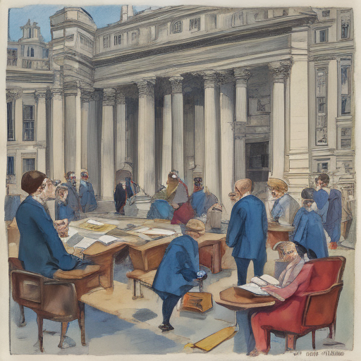

Today at lunch, I overheard a conversation about the Bank of England. Paolo Bulgari mentioned how he plans to expand his business internationally, but the Conservative media seems skeptical. Their reports imply it's too risky given current market conditions. I decided to read up on recent economic trends instead of jumping into any hasty decisions.

Keywords: Bank of England, Paolo Bulgari, Conservative media
Fictional diary entry.